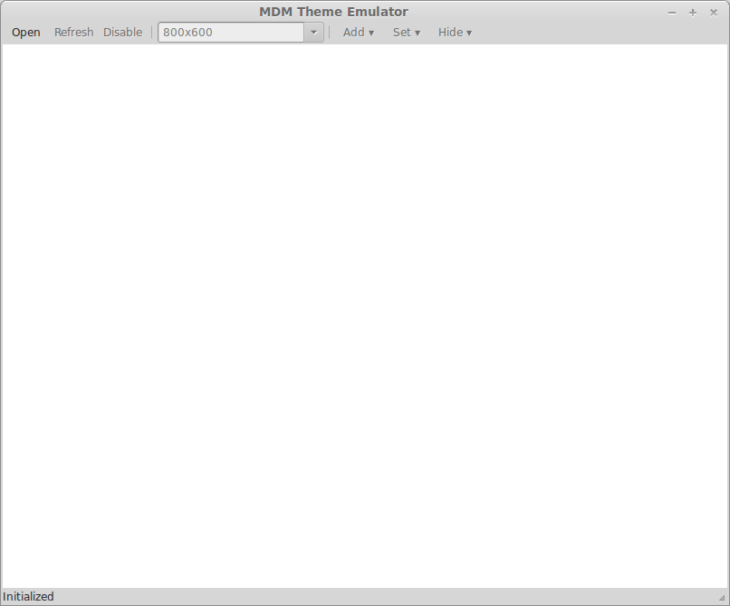
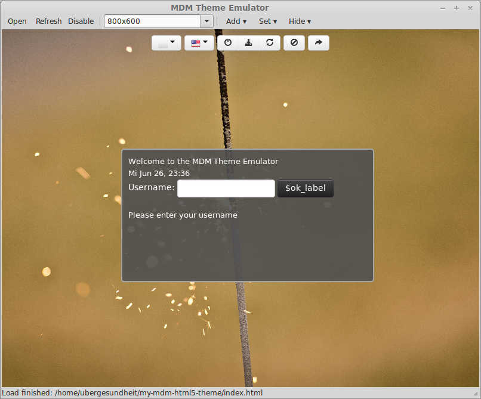
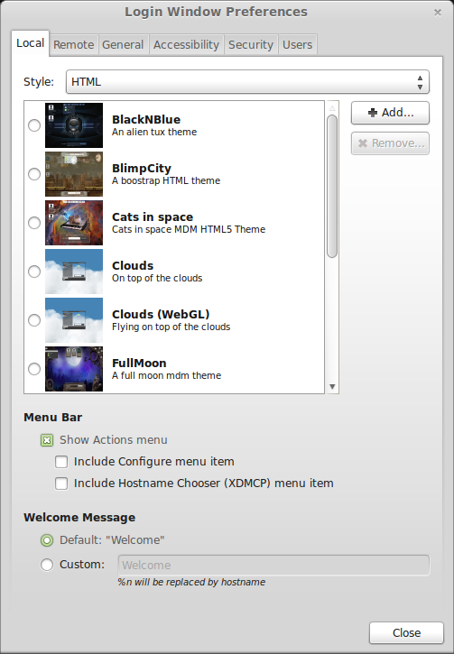

How to create a MDM HTML5 Greeter Theme
Hi everyone,
in this tutorial, I will show you the basics of making a MDM HTML5 Greeter Theme.
The feature of presenting the user a greeter based on HTML5 is a new feature in Linux Mint 15 Olivia, which I personally really like.
The prerequisites for this tutorial are:
- at least Linux Mint 15 Olivia
- a little knowledge how to use the terminal
- a little knowledge about HTML
- a text editor
Okay, lets begin:
1. Make a copy of the base MDM HTML5 theme
All the MDM HTML5 Greeter themes are located in the folder /usr/share/mdm/html-themes
There are a few options now:
- Make a copy in the html-themes folder (requires you to cp with sudo)
- Make a copy in your home directory and copy the theme back to the html-themes folder when the theme is ready
For now, we do the second option and make a copy to the home directory.
First, open a terminal and write
to copy the base MDM theme to your home directory.
Now open the directory my-mdm-html5-theme located in your home directory.
The base theme uses the excellent Bootstrap framework created by Twitter, in order to make things easier to start with.
The my-mdm-html5-theme directory should contain the following files and directories:
- css - styles for the theme
- js - javascripts for the theme
- img - images for the theme
- bg.jpg - the background image of the base theme
- index.html - the main html file for the base theme
- screen.jpg - a tiny preview image of the theme for the theme chooser
- theme.css - custom styles for the theme
- theme.info - file describing the theme for the theme chooser
2. Get to know your theme
The better get a grasp of what you are modifying, you can use the built in mdm-theme-emulator to directly see the changes you have made to the theme.
To start the mdm-theme-emulator, start another terminal and type
and press Enter to start the mdm-theme-emulator.
The emulator should now start. It should look like in the picture below.

Now, press the button labeled Open and select the index.html located in your my-mdm-html5-theme folder.
This will open the currently unmodified base mdm theme in the emulator for you to preview. It will look like the image below

You now should play a little around with the emulator and the base theme so get a feeling for the different elements and fields in the greeter theme
3. Modifying the theme
Now is the time to open up the index.html in your favourite text editor and start editing.
At first, you should quickly read through the code of the index.html in order to get a feeling how the theme actually works. In my opinion, the file has a really good structure and well written comments.
So now it's your turn. A possible workflow could be:
- Modify the code
- save the file
- refresh the emulator
If you think you are finished modifying the theme, you should, if not already done, save your work one last time and open the theme.info in you favourite text editor.
Here, change the lines beginning with Name= and Description= with the actual name and description you want for your theme. Then save and close the file.
This final step is optional, but I would recommend you to do this:
Make a screenshot using the theme-emulator and save the picture with a resolution of 200 by 150 pixels and overwrite the screen.jpg file.
Your greeter theme is now ready for the final step.
4. Using your modified theme
After you modified the base theme there is only one step left and you can use the theme for your logins.
Open a terminal and type
and press enter. This will copy your theme to the correct location where MDM will find it.
Please note the sudo at the beginning of the command. It is needed in order to successfully copy your theme to the folder /usr/share/mdm/html-themes.
You will have to enter you password because the directory where the themes are stores is owned by another user.
To actually use your theme the next time you log in, there are two ways to achieve this:
You either open up the System settings through the menu, switch to advanced mode and click on login, or
you open up a terminal and type
and press enter. This should open up the login window preferences. It should look like the image below

There you can select your theme and then press the button labeled close on the bottom right corner of the window.
Congratulations, you now have your own HTML5 MDM Greeter theme